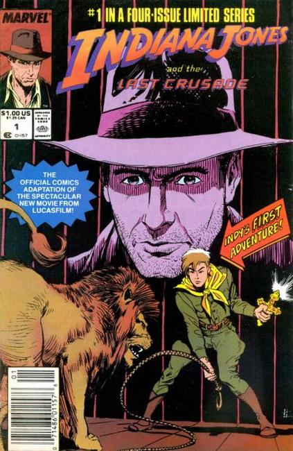

Indiana Jones and the Last Crusade is a 1989 American action-adventure film directed by Steven Spielberg, from a story co-written by executive producer George Lucas. It is the third installment in the Indiana Jones franchise. Harrison Ford reprises the title role and Sean Connery plays Indiana's father, Henry Jones Sr. Other cast members featured include Alison Doody, Denholm Elliott, Julian Glover, River Phoenix, and John Rhys-Davies. In the film, set largely in 1938, Indiana searches for his father, a Holy Grail scholar, who has been kidnapped by Nazis.
After the mixed reaction to Indiana Jones and the Temple of Doom, Spielberg chose to compensate with a film that toned down the violence and gore. During the five years between Temple of Doom and Last Crusade, he and executive producer Lucas reviewed several scripts before accepting Jeffrey Boam's. Filming locations included Spain, Italy, the United Kingdom, Turkey and Jordan.
The film was released in North America on May 24, 1989 to mostly positive reviews and a financial success, earning $474.2 million at the worldwide box office totals. It won an Academy Award for Best Sound Editing.

Series: 4 issue movie adaptation 1989
Publisher: Marvel
Written by David Michelinie
Illustrations by Bret Blevins
Comics' official comic adaptation of the 1989 movie "Indiana Jones and the Last Crusade."
"Chapter 1" After thinking back to his first adventure and then recovering the Cross of Coronado, Indy finds out that his father has disappeared while on a quest in part one of this adaptation.
"Chapter 2" When Indy starts the search for his dad, he discovers that his dad was on the trail of the Holy Grail. And now the Nazis are after both father and son and also want the Holy Grail in part two of this adaptation.
"Chapter 3" Father and son together again...for the last time! Can Indy and his dad escape the clutches of the Nazis and beat them to the hidden location of the fables Holy Grail?!
Chapter 4" Don't miss the exciting conclusion as Indy and the gang fight their way through Nazis and deadly ancient riddles and traps to find the Holy Grail!